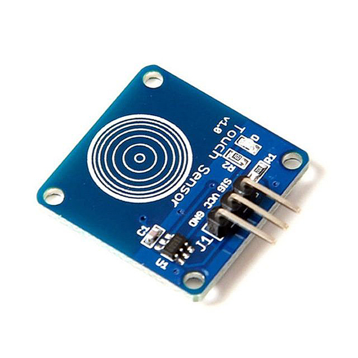
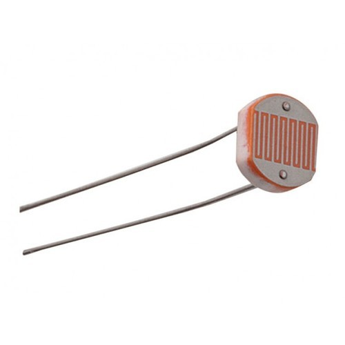
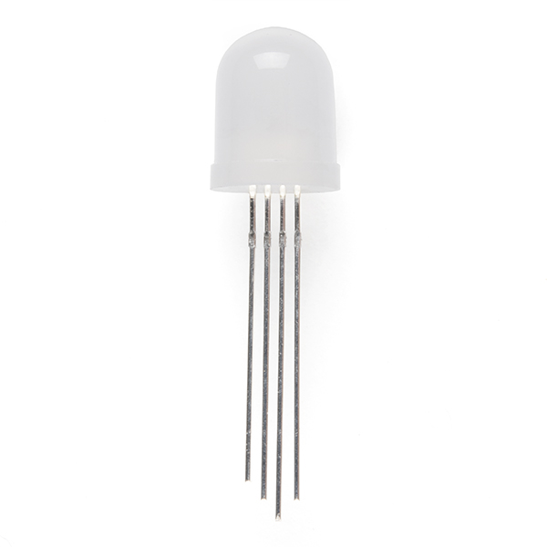
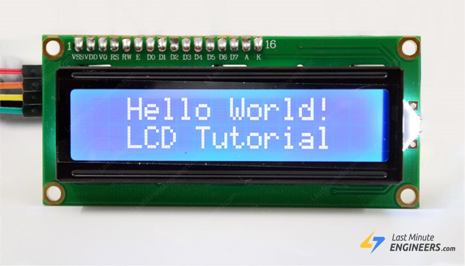

Input and output devices are used in embedded systems to achieve certain fucntions. Input devices are used to provide data to the embedded systems while outpur devices are used to trannmit data from the embedded system. Below are some examples of basic input and output devices that are commonly used, along with their fucntions.
A touch sensor, also known as a capacitive sensor, is able to capture and record physical touch or pressure. It generates a signal when there is a change in capacitance. The signal can be applied to start or stop various functions in an embedded system. These sesnors are commonly used in lighting appliances and touch screen mobiles. 
A passive infrared (PIR) sensor is an electronic sensor that is able to measure the infrared light radiated from objects or people, near its field of view. It measures differential change between two halves of its detecting area, and then generates an output signal, based on the type of change detected. A positive change is caused by a warm body entering the detection area while a negative change is caused by a warm body leaving the detection area. They are frequently used in automatic lighting systems and security alarms.

Light dependent resistors (LDR), also known as photoresistors, are light sensitive devices that are able to detect the absence or presence of light, as well as measure its intensity. They are able to convert light energy into an electrical signal. They are used in light sensing circuits, which may include alarm clocks, street lights and burglar alarms.
RRG LED stands for red blue and green (RGB), light-emitting diodes (LED). It produces light by passing electrical current to the diode, which is a semiconducting material. It then emits light (photons) based on the principle of electroluminescence. To produce various colours, the 3 colours can be combined in different intensities. The intensities for each colour range from 0-255, or 00-FF in hexadecimal.
The I2C LCD is a simple-to-use display module. I2C basically stands for inter-integrated circuit, which means that it is able to initiate communication between two or more integrated circuits. LCD stands for liquid crystal display, which involves the use of liquid crystals that will turn visible when electricity passes through them. It is commonly used to display information through text. This includes customized messages, time, temperature and humidity, based on the type of input sensors integrated into the circuit.
